REAR AXLE SHAFT > INSTALLATION |
| 1. INSTALL REAR AXLE SHAFT OIL SEAL LH |
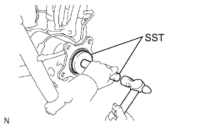 |
Using SST and a hammer, tap in a new oil seal.
| 2. INSTALL REAR AXLE SHAFT LH |
Install the O-ring to the axle housing.
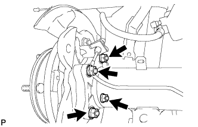 |
Install the rear axle shaft and parking brake plate with the 4 nuts.
| 3. CONNECT REAR SPEED SENSOR LH |
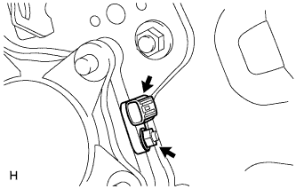 |
Install the speed sensor with the nut.
| 4. CONNECT NO. 3 PARKING BRAKE CABLE ASSEMBLY |
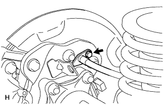 |
Connect the No. 3 parking brake cable with the bolt.
| 5. INSTALL PARKING BRAKE SHOE LEVER SUB-ASSEMBLY LH |
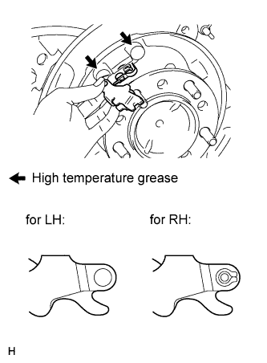 |
Apply high temperature grease to the parking brake anchor block.
Install the parking brake shoe lever to the No. 3 parking brake cable.
| 6. INSTALL NO. 2 PARKING BRAKE SHOE ASSEMBLY LH |
Apply high temperature grease to the areas of the backing plate that contact the shoe.
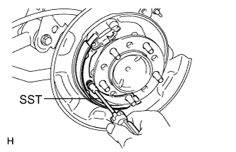 |
Using SST, install the No. 2 parking brake shoe with the shoe hold down spring pin, compression spring and shoe hold down spring cup.
| 7. INSTALL NO. 1 PARKING BRAKE SHOE ASSEMBLY LH |
Apply high temperature grease to the areas of the backing plate that contact the shoe.
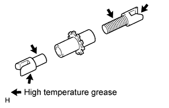 |
Apply high temperature grease to the thread and all joining areas of the parking brake shoe adjuster screw set.
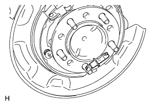 |
Set the No. 1 parking brake shoe and shoe adjuster screw set in place.
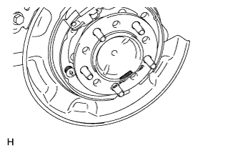 |
Connect the tension spring.
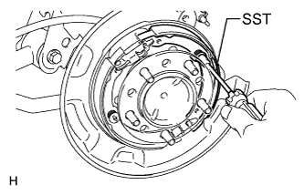 |
Using SST, install the shoe hold down spring pin, compression spring and shoe hold down spring cup.
| 8. INSTALL PARKING BRAKE SHOE RETURN TENSION SPRING LH |
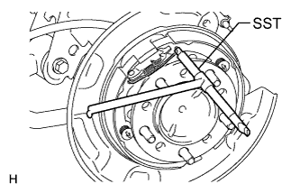 |
Using SST, install the shoe return spring.
| 9. CHECK PARKING BRAKE INSTALLATION |
Check that each part is installed properly.
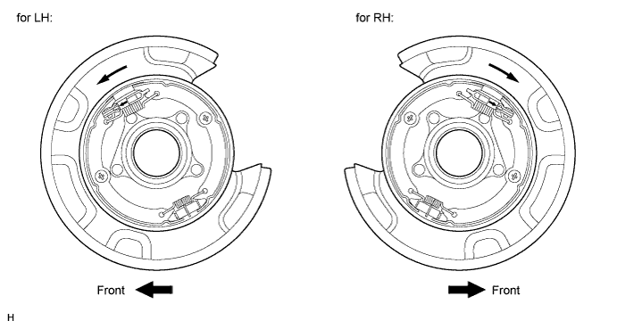
| 10. INSTALL REAR DISC LH |
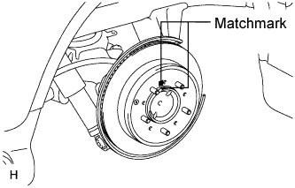 |
Align the matchmarks, and then install the rear disc.
| 11. CONNECT REAR DISC BRAKE CYLINDER ASSEMBLY LH |
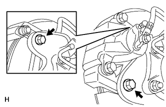 |
Connect the rear disc brake cylinder and install 2 new bolts.
| 12. CONNECT REAR BRAKE FLEXIBLE HOSE |
Set the flexible hose to the connecting point with the brake tube, and then install a new clip.
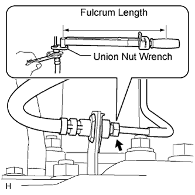 |
Using SST, connect the flexible hose to the brake tube while holding the flexible hose with a wrench.
| 13. CONNECT CABLE TO NEGATIVE BATTERY TERMINAL |
| 14. FILL RESERVOIR WITH BRAKE FLUID |
| 15. BLEED AIR FROM BRAKE LINE |
Bleed air from the front brake system.
Turn the engine switch on (IG).
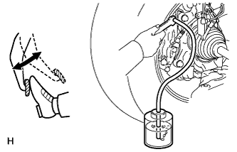 |
Connect a vinyl tube to the brake caliper.
Depress the brake pedal several times, then loosen the bleeder plug with the pedal held down (procedure "A").
At the point when the fluid stops coming out, tighten the bleeder plug, then release the brake pedal (procedure "B").
Repeat procedure "A" to "B" until all the air in the fluid has been bled out.
Repeat the above procedures to bleed the other front brake line.
Bleed air from the rear brake system.
Turn the engine switch on (IG) and depress the brake pedal.
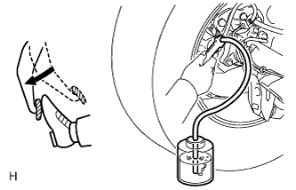 |
Connect a vinyl tube to the brake caliper.
Loosen the bleeder plug and release air.
When the air is completely bled out of the brake fluid through the bleeder plug, tighten the bleeder plug.
Repeat the above procedures to bleed the other rear brake line.
Connect the intelligent tester.
Turn the engine switch off.
Connect the intelligent tester to the DLC3.
Turn the engine switch on (IG).
Enter the following menus: Chassis / ABS/VSC/TRC / Utility / Air Bleeding.
Bleed front right brake line.
Select "FR Line" on the intelligent tester.
With "FR Line" turned on with the intelligent tester, depress the brake pedal and hold it to bleed the front right brake line.
Repeat the step above until there are no more air bubbles in the fluid.
Bleed front left brake line.
Select "FL Line" on the intelligent tester.
With "FL Line" turned on with the intelligent tester, depress the brake pedal and hold it to bleed the front left brake line.
Repeat the step above until there are no more air bubbles in the fluid.
Bleed rear right brake line.
Select "RR Line" on the intelligent tester.
With "RR Line" turned on with the intelligent tester, bleed the left brake line.
Repeat the step above until there are no more air bubbles in the fluid.
Bleed rear left brake line.
Select "RL Line" on the intelligent tester.
With "RL Line" turned on with the intelligent tester, bleed the left brake line.
Disconnect the intelligent tester from the DLC3.
Clear the DTCs (Click here).
| 16. CHECK BRAKE FLUID LEVEL IN RESERVOIR |
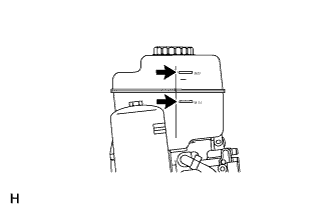 |
When inspecting or refilling with the engine switch off, depress the brake pedal 40 times or more (there will be less pedal resistance and the pedal stroke will lengthen), and then add fluid until the fluid level is at the MAX line.
| 17. CHECK FOR BRAKE FLUID LEAK |
| 18. INSTALL REAR WHEEL LH |
| 19. INSPECT DIFFERENTIAL OIL |
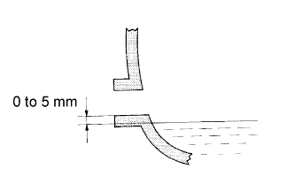 |
Add differential oil so that the oil level is between 0 to 5 mm (0 to 0.197 in.) from the bottom lip of the differential filler plug hole.
| Item | Oil Type and Viscosity |
| w/o LSD | Toyota Genuine Differential gear oil LT 75W-85 GL-5 or equivalent |
| w/ LSD | Toyota Genuine Differential gear oil LX 75W-85 GL-5 or equivalent |
| Item | Specified Condition |
| Standard | 4.15 to 4.25 liters (4.39 to 4.49 US qts., 3.66 to 3.74 Imp. qts.) |
| w/ LSD | 4.10 to 4.20 liters (4.34 to 4.43 US qts., 3.60 to 3.69 Imp. qts.) |
| w/ Differential lock |
for Front Differential:
Using a 10 mm hexagon wrench, install a new gasket and the filler plug.
Install the engine under cover.
for Rear Differential:
Install a new gasket and the filler plug.
| 20. INSPECT FOR DIFFERENTIAL OIL LEAK |
| 21. CHECK PARKING BRAKE LEVER TRAVEL |
Fully pull the parking brake lever to engage the parking brake.
Release the lever to disengage the parking brake.
Slowly pull the parking brake lever all the way, and count the number of clicks.
| 22. ADJUST PARKING BRAKE LEVER TRAVEL |
Remove the console cup holder box sub-assembly (Click here).
Completely release the parking brake lever.
Loosen the adjusting nut to completely release the parking brake cable.
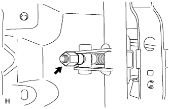 |
Temporarily install the hub nuts.
Remove the hole plug.
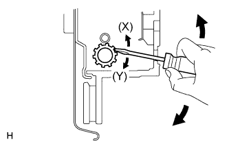 |
Insert an adjustment tool into the adjustment hole of the disc. Rotate the adjustment wheel in the "X" direction until the shoes are locked. Then rotate the adjustment wheel in the "Y" direction 8 notches.
Check that the disc can be rotated lightly. If not, rotate the adjustment wheel in the "Y" direction and check again.
Install the hole plug.
Remove the hub nuts.
Turn the adjusting nut until the parking brake lever travel becomes correct.
Operate the parking brake lever 3 to 4 times, and check the parking brake lever travel.
Check whether the parking brake drags or not.
When operating the parking brake lever, check that the brake warning light comes on.
Install the console cup holder box sub-assembly (Click here).
| 23. CHECK SRS WARNING LIGHT |
Check the SRS warning light (Click here).
| 24. CHECK SPEED SENSOR SIGNAL |
Check the speed sensor signal (Click here).
| 25. MEASURE VEHICLE HEIGHT (w/ KDSS) |
Set the tire pressure to the specified value(s) (Click here).
Bounce the vehicle to stabilize the suspension.
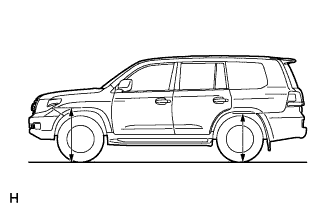 |
Measure the distance from the ground to the top of the bumper and calculate the difference in the vehicle height between left and right. Perform this procedure for both the front and rear wheels.
| 26. CLOSE STABILIZER CONTROL WITH ACCUMULATOR HOUSING SHUTTER VALVE (w/ KDSS) |
Using a 5 mm hexagon socket wrench, tighten the lower and upper chamber shutter valves of the stabilizer control with accumulator housing.
| 27. INSTALL STABILIZER CONTROL VALVE PROTECTOR (w/ KDSS) |
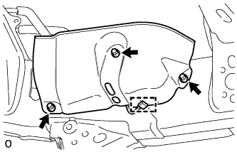 |
Install the valve protector with the 3 bolts.
Attach the clamp, and connect the connector to the valve protector.